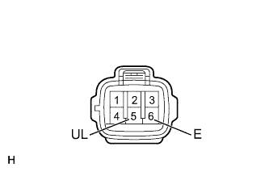

СИСТЕМА ПОСАДКИ И ЗАПУСКА (для моделей с функцией посадки) > Не действует функция разблокировки для двери багажного отделения |
| 1.ПРОВЕРЬТЕ РАБОТУ СИСТЕМЫ УПРАВЛЕНИЯ ЗАМКАМИ ДВЕРЕЙ |
Приводя в действие выключатель системы блокировки дверей на главном переключателе сети мультиплексной связи, убедитесь, что двери блокируются и разблокируются в соответствии с состоянием выключателя (Нажмите здесь).
|
| ||||
| OK | |
| 2.СНИМИТЕ ПОКАЗАНИЯ ПОРТАТИВНОГО ДИАГНОСТИЧЕСКОГО ПРИБОРА (ПОЗИЦИОННЫЙ ПЕРЕКЛЮЧАТЕЛЬ ДВЕРНОГО ЗАМКА) |
Подсоедините портативный диагностический прибор к DLC3.
Включите зажигание (IG).
Включите портативный диагностический прибор.
Войдите в следующие меню: Body / Main Body / Data List.
В соответствии с указаниями на дисплее портативного диагностического прибора считайте данные в режиме Data List.
| Информация на дисплее прибора | Измеряемая величина / диапазон измерения | Нормальное состояние | Замечание по диагностике |
| Back Door Lock Pos SW | Состояние датчика положения замка двери багажного отделения / ON (ВКЛ) или OFF (ВЫКЛ) | ON (ВКЛ): дверь багажного отделения разблокирована OFF (ВЫКЛ): дверь багажного отделения заблокирована | - |
|
| ||||
| OK | |
| 3.СНИМИТЕ ПОКАЗАНИЯ ПОРТАТИВНОГО ДИАГНОСТИЧЕСКОГО ПРИБОРА (ВЫКЛЮЧАТЕЛЬ РАЗБЛОКИРОВКИ) |
Считайте данные в режиме "Data List" портативного диагностического прибора (Нажмите здесь).
| Информация на дисплее прибора | Измеряемая величина / диапазон измерения | Нормальное состояние | Замечание по диагностике |
| Tr/B Door Unlock SW | Выключатель разблокировки двери багажного отделения / ON (ВКЛ) или OFF (ВЫКЛ) | ON (ВКЛ): Выключатель разблокировки двери багажного отделения нажат OFF (ВЫКЛ): Выключатель разблокировки двери багажного отделения не нажат | - |
|
| ||||
| OK | ||
| ||
| 4.ПРОВЕРЬТЕ ВЫКЛЮЧАТЕЛЬ ЭЛЕКТРОННОГО КЛЮЧА БАГАЖНОГО ОТДЕЛЕНИЯ (ВЫКЛЮЧАТЕЛЬ РАЗБЛОКИРОВКИ) |
|  |
Снимите выключатель электронного ключа багажного отделения (Нажмите здесь).
Измерьте сопротивление в соответствии со значениями, приведенными в таблице ниже.
| Контакты для подключения диагностического прибора | Положение переключателя | Заданные условия |
| 5 (UL) - 6 (E) | Ни один из переключателей не нажат | 10 кОм или более |
| 5 (UL) - 6 (E) | Выключатель разблокировки нажат | Менее 1 Ом |
|
| ||||
| OK | |
| 5.ПРОВЕРЬТЕ ЖГУТ ПРОВОДОВ И РАЗЪЕМ (ВЫКЛЮЧАТЕЛЬ ЭЛЕКТРОННОГО КЛЮЧА БАГАЖНОГО ОТДЕЛЕНИЯ – ЭБУ СЕРТИФИКАЦИИ) |
Отсоедините разъем X6 выключателя.
Отсоедините разъем G38 ЭБУ.
Измерьте сопротивление в соответствии со значениями, приведенными в таблице ниже.
| Контакты для подключения диагностического прибора | Состояние | Заданные условия |
| X6-5 (UL) - G38-22 (TSW5) | Всегда | Менее 1 Ом |
| G38-22 (TSW5) - масса | Всегда | 10 кОм или более |
| X6-6 (E) - масса | Всегда | Менее 1 Ом |
|
| ||||
| OK | ||
| ||